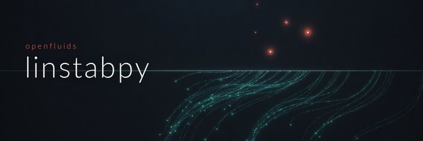
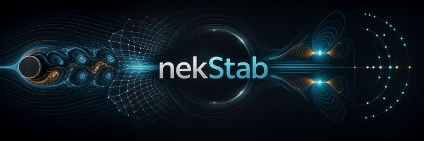
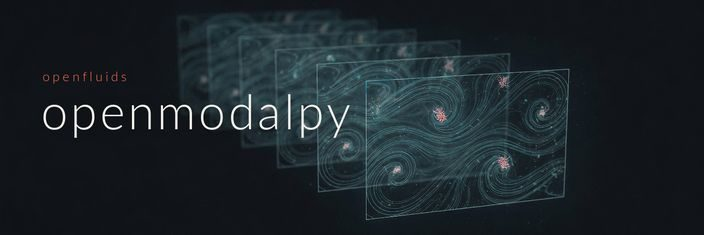
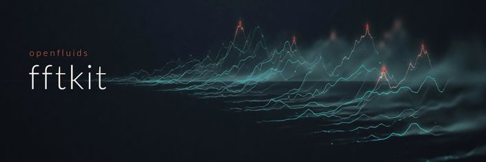
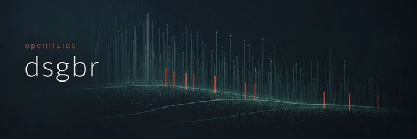
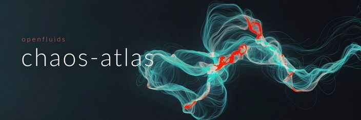
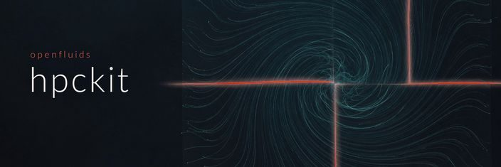
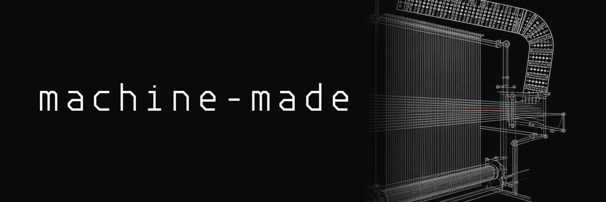
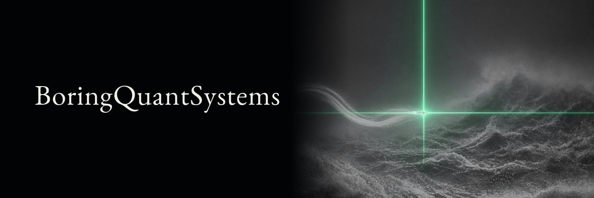
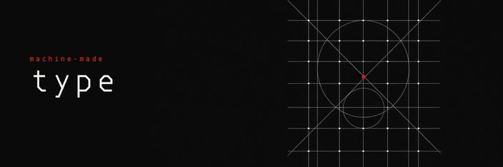

Open tools for fluid flows: state-of-the-art methods, ultra-modern low-memory code, for humans and agents.
Latest
- dynachaos
v0.4.2
- quadros
v0.1.3
- chaos-atlas
py-v0.3.1
Stability

linear stability and resolvent analysis docs
Pythonv1.0.2

stability and bifurcation for Nek5000
Pythonv2.0.0
Analysis

nine modal decompositions, one API
Pythonv0.7.0
Lyapunov exponents, recurrence, entropy site
Pythonv0.4.2

spectra, one FFT API over eight backends
Pythonv0.4.0

peaks in noisy, sloped spectra
Pythonv0.7.0

chaotic systems in the browser site
TypeScriptpy-v0.3.1
Solvers
Runs

Slurm runs from a local checkout
Pythonv0.2.1
snapshots to frames and videos
Pythonv0.1.3
The houses

A home-built, asynchronous factory for scientific software.
type warp-v0.2.0

Boring on purpose. Deterministic infrastructure for non-deterministic systems.
nanobook v0.19.3

Four typefaces, made by code.
Warp v0.2.0